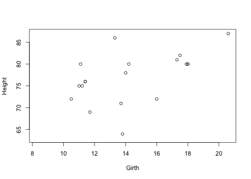
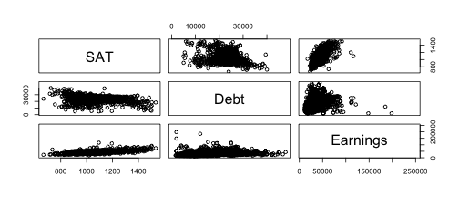

- Title, author and date
- Use a YAML header in your document to do this
---
title: Example Markdown document
author: Daniel Anderson
date: "2015-11-11"
---
Daniel Anderson
CourseR
---
title: Example Markdown document
author: Daniel Anderson
date: "2015-11-11"
---

The following lines of code uses the read.table function, to read the trees
data into an object named trees. Columns are separated by a pipe, |,
missing data are coded 999, and, and the column names are Girth, Height, and
Volume
trees <- read.table("./data/trees.txt",
sep = "|", na = "999",
col.names = c("Girth", "Height", "Volume"))
head(trees)
## Girth Height Volume
## 1 8.3 NA NA
## 2 NA 65 10.3
## 3 NA 63 NA
## 4 10.5 72 16.4
## 5 10.7 NA NA
## 6 10.8 NA 19.7



mean() and display it in text. If
there are missing data in the vector that you are trying to calculate the mean
from, you will also need to include the additional argument na.rm = TRUE.
Make some manipulation to the data (e.g., remove a few random cases) and
report the mean in text again, using code.
The mean girth of trees in the sample was 13.57. For trees below 70 feet the mean girth was 12.75.
pairs(trees)

Create the following matrix (which we created during the first class, if you saved your syntax) \[\mathbf{m} = \left [ \begin{array}{ccccc} 18 & 32 & 11 & 41 & 73 \\\ 61 & 47 & 22 & 87 & 63 \\\ 44 & 52 & 23 & 42 & 77 \\\ 23 & 17 & 5 & 72 & 83 \end{array} \right ] \]
m <- matrix(c(18, 32, 11, 41, 73,
61, 47, 22, 87, 63,
44, 52, 23, 42, 77,
23, 17, 5, 72, 83
),
byrow = TRUE, ncol = 5
)
m
## [,1] [,2] [,3] [,4] [,5]
## [1,] 18 32 11 41 73
## [2,] 61 47 22 87 63
## [3,] 44 52 23 42 77
## [4,] 23 17 5 72 83
1) Use three different methods to subset the matrix and obtain the following vector \[\mathbf{v} = \left [ \begin{array}{ccc} 52 & 42 & 77 \end{array} \right ] \]
m[3, c(2,4,5)]
m[ ,c(2,4,5)][3, ]
m[3, m[3, ] == 52 |
m[3, ] == 42 |
m[3, ] == 77 ]
m[3, c(FALSE, TRUE, FALSE, TRUE, TRUE)]
m[3, ][ m[3, ] > 40 &
m[3, ] != 44 ]
subset(m, c(FALSE, FALSE, TRUE, FALSE),
select = c(2,4,5), drop = TRUE)
## [1] 52 42 77
## [1] 52 42 77
## [1] 52 42 77
## [1] 52 42 77
## [1] 52 42 77
## [1] 52 42 77
2) Subset \(\mathbf{m}\) again to get \(\mathbf{v2} = \left [\begin{array}{cc} 87 & 42 \end{array} \right ]\). Then create a new matrix using the following steps:
One possible method
v <- m[c(2,3), 4]
v
## [1] 87 42
m2 <- m[ ,-5]
m2[2, ] <- v + m2[2, ]
m2[4, ] <- v + m2[4, ]
m2
## [,1] [,2] [,3] [,4]
## [1,] 18 32 11 41
## [2,] 148 89 109 129
## [3,] 44 52 23 42
## [4,] 110 59 92 114

If you don't have the rmarkdown library installed, first run
install.packages("rmarkdown")
Then, to render to document
library(rmarkdown)
render("yourFile.Rmd", "html_document")
Note that your working directory must be set to the same location as the .Rmd
file, or you can provide a path to the file in the render function.